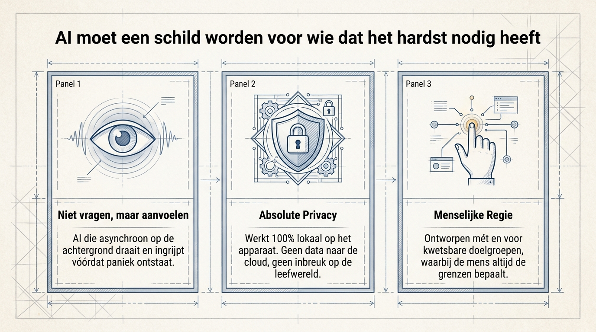

Demenz
Die Frage oder Handlungsabfolge kann im entscheidenden Moment verschwinden.
Vision
Bei Stress, Demenz, geringer Literalität oder digitaler Angst können Menschen oft nicht im richtigen Moment die richtige Frage stellen. Ouroboros beginnt bei dieser menschlichen Realität.

Das Prompting-Paradox
Generative KI erwartet noch immer, dass Nutzer ein Problem bemerken, einen Prompt formulieren, die Antwort prüfen und den nächsten Schritt ausführen. Genau dann, wenn Hilfe nötig ist, bricht diese Kette.
Die Frage oder Handlungsabfolge kann im entscheidenden Moment verschwinden.
Komplexe Befehle werden zur Hürde statt zur Lösung.
Eine Warnung, Betrugsseite oder lauter Ton kann bereits Panik auslösen.


Wo KI zum Schutzschild wird
Ouroboros ist als Local-First-OS-Agenten-Ökosystem gedacht: kontextbewusst, streng bei Sicherheit und bescheiden genug, eine vertraute Person einzubeziehen, bevor Schutzmaßnahmen Grenzen überschreiten.
Designprinzipien
Das System erkennt Unregelmäßigkeiten, bevor die Person sie erklären muss.
Sensible Verhaltens- und Medizinsignale bleiben standardmäßig auf dem Gerät.
Nutzer, Angehörige und Fachkräfte behalten bei folgenreichen Aktionen das letzte Wort.

Konkret werden
Von der Philosophie zu digitaler Sicherheit, Navigation, Routine und Beruhigung wechseln.